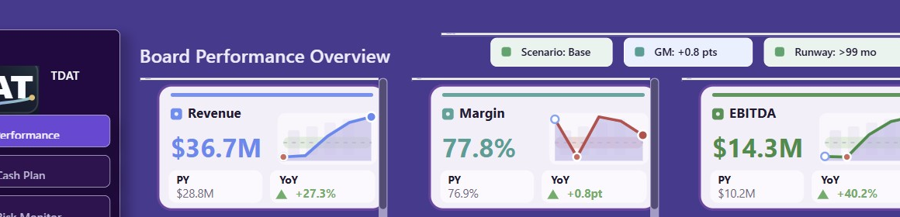

Project 20 SVG Fit QA
Final PBIX was rebuilt after Signature, KPI Card SVG, and Lens Summary SVG changes. Direct PBIX verification passed with no issues.
Signature crop
KPI card row crop

Verification checks
Signature white top line removed by SVG top-bar mask plus layout mask.
KPI Card SVG canvas is 252x158 and visual image size is 249x158 inside each 255x164 frame.
Lens Summary SVG is 166x76 inside a 170x80 frame, with sidebar-matched outside backing.